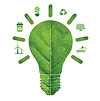

Maneiras Eficientes de Descarte
A redução de gasto de energia elétrica e consumo de água é uma prática altamente importante tanto na sua residência, quanto na empresa em si. Na parte empresarial, o consumo consciente e a preocupação com o meio-ambiente são práticas em que atraem clientes, pois com a alta conscientização da mídia sobre o tópico, os clientes percebem o quanto a empresa se preocupa não só com o ambiente, mas com seu próprio bem-estar.
Sua abrangência é ampla e resultados são aparentes já no primeiro mês; uma boa avaliação de impacto ambiental pode ajudar a empresa a ver quanto está gastando e o que pode melhorar - sua implementação é simples, com a otimização do uso da água e a prevenção de desperdício, treinamento de colaboradores sobre boas práticas, o gerenciamento maior de resíduos para a sua separação própria, e também quando possível, reduzir emissões de carbono tanto dentro da empresa com o consumo de energia, quanto da locomoção de veículos; home-office ajuda tanto na saúde mental quanto no meio-ambiente.
A energia elétrica possui um ponto principal no meio-ambiente sobre o seu consumo tanto quanto a água. Muitas vezes, luzes ligadas podem ser simplesmente trocada por cortinas abertas, e um ar-condicionado consegue ser substituido por uma casa arejada. Podemos reduzir custos de diversas formas, sem sacrificar o conforto em que zelamos.
Também, uma boa ajuda com esse consumo consciente são embalagens ecológicas de produtos consumidos ou vendidos; materiais recicláveis e biodegradáveis são uma alternativa viável para esses diversos meios.
Metas Claras de Sustentabilidade
Metas claras, simples e tangíveis são importantes para a participação na conscientização ambiental. Começar pequeno é sempre bom, juntamente com uma transparência dentro da empresa sobre como essas metas estão indo. Empresas grandes muitas vezes podem adotar maneiras de recompensar os colaboradores sobre essa meta alcançada, incentivando ainda mais para as boas práticas.